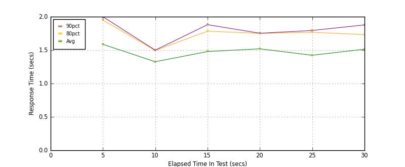
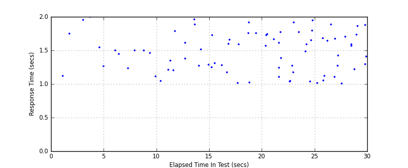
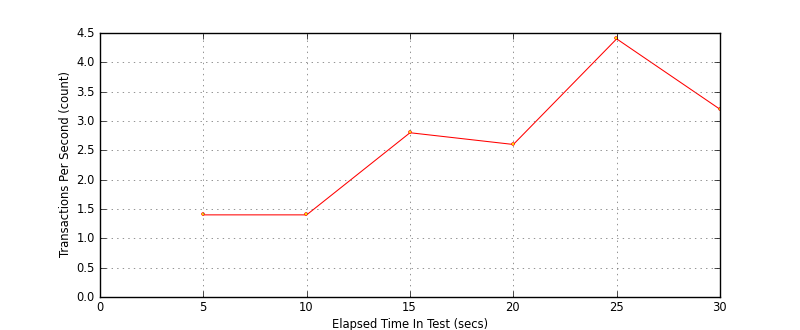
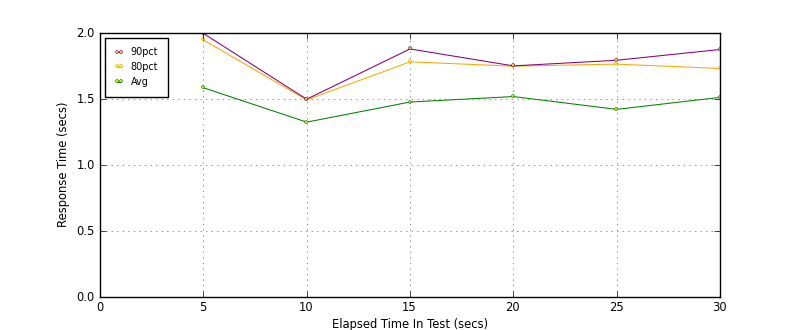
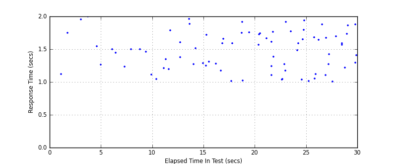

Performance Results Report
Summary
transactions: 85
errors: 0
run time: 30 secs
rampup: 30 secs
test start: 2011-03-09 16:27:51
test finish: 2011-03-09 16:28:20
time-series interval: 5 secs
workload configuration:
| group name | threads | script name |
|---|
| user_group-2 | 3 | example_mock.py |
| user_group-1 | 3 | example_mock.py |
All Transactions
Transaction Response Summary (secs)
| count | min | avg | 80pct | 90pct | 95pct | max | stdev |
|---|
| 85 | 1.005 | 1.473 | 1.750 | 1.879 | 1.940 | 1.999 | 0.291 |
Interval Details (secs)
| interval | count | rate | min | avg | 80pct | 90pct | 95pct | max | stdev |
|---|
| 1 | 7 | 1.40 | 1.119 | 1.587 | 1.949 | 1.999 | 1.999 | 1.999 | 0.332 |
| 2 | 7 | 1.40 | 1.040 | 1.326 | 1.495 | 1.499 | 1.499 | 1.499 | 0.195 |
| 3 | 14 | 2.80 | 1.197 | 1.478 | 1.783 | 1.881 | 1.957 | 1.957 | 0.264 |
| 4 | 13 | 2.60 | 1.012 | 1.520 | 1.750 | 1.752 | 1.916 | 1.916 | 0.299 |
| 5 | 22 | 4.40 | 1.011 | 1.423 | 1.766 | 1.794 | 1.915 | 1.940 | 0.324 |
| 6 | 16 | 3.20 | 1.005 | 1.514 | 1.732 | 1.877 | 1.879 | 1.879 | 0.279 |
Graphs
Response Time: 5 sec time-series

Response Time: raw data (all points)

Throughput: 5 sec time-series

Custom Timer: Example_Timer
Timer Summary (secs)
| count | min | avg | 80pct | 90pct | 95pct | max | stdev |
|---|
| 79 | 1.004 | 1.472 | 1.749 | 1.877 | 1.939 | 1.997 | 0.290 |
Interval Details (secs)
| interval | count | rate | min | avg | 80pct | 90pct | 95pct | max | stdev |
|---|
| 1 | 7 | 1.40 | 1.118 | 1.585 | 1.947 | 1.997 | 1.997 | 1.997 | 0.332 |
| 2 | 7 | 1.40 | 1.040 | 1.325 | 1.493 | 1.498 | 1.498 | 1.498 | 0.195 |
| 3 | 14 | 2.80 | 1.196 | 1.477 | 1.781 | 1.879 | 1.956 | 1.956 | 0.264 |
| 4 | 13 | 2.60 | 1.012 | 1.519 | 1.749 | 1.751 | 1.914 | 1.914 | 0.298 |
| 5 | 22 | 4.40 | 1.011 | 1.422 | 1.764 | 1.794 | 1.913 | 1.939 | 0.323 |
| 6 | 16 | 3.20 | 1.004 | 1.512 | 1.731 | 1.875 | 1.877 | 1.877 | 0.278 |
Graphs
Response Time: 5 sec time-series

Response Time: raw data (all points)

Throughput: 5 sec time-series